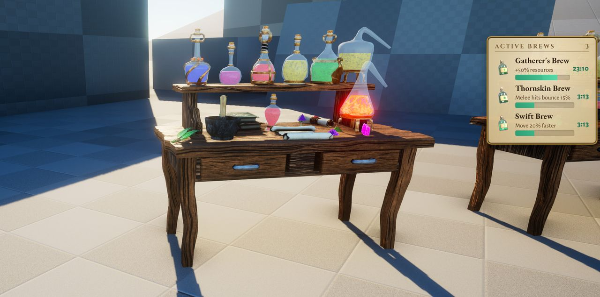
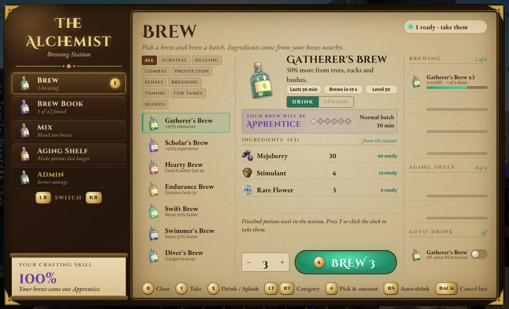
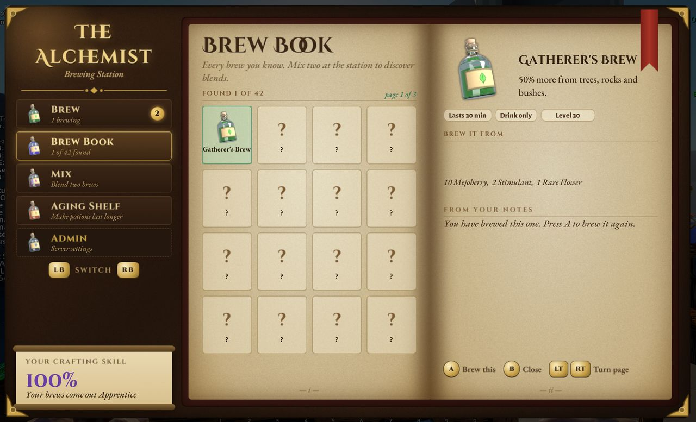
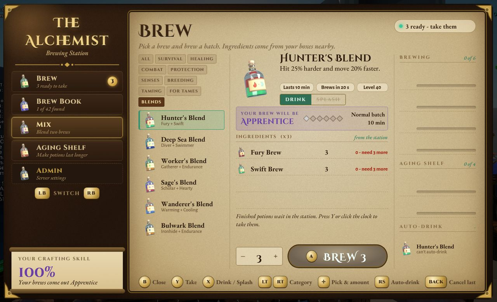
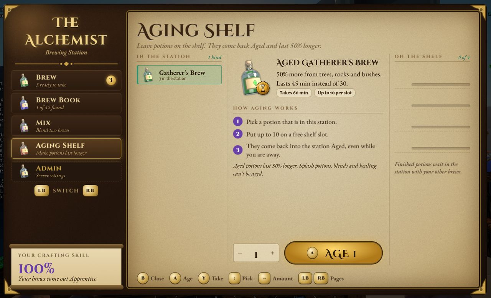
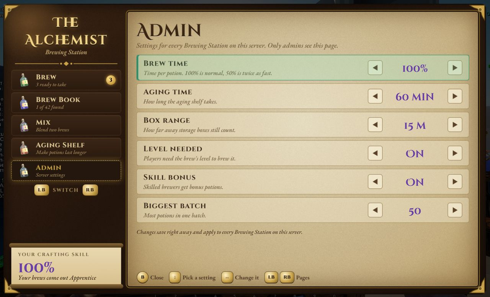

BLACKWIRE
BLACKWIRE
BLACKWIRE
BLACKWIRE
Brew 44 potions at your own Brewing Station - for survival, combat, taming, breeding and your tames - with splash brews, aged brews and potion darts.

Numbers below were measured in game.
| Brew | What it does |
|---|---|
| Regeneration | +2 health a second |
| Swift | Move 20% faster |
| Pack Mule | Carry 1.5 times the weight |
| Ironhide | Take 15% less damage |
| Scholar's | 1.5 times the XP |
| Featherfall | No fall damage |
| Fury | Melee hits 25% harder |
| Bloodthirst | Heals you for 10% of your melee damage |
| Thornskin | Sends 15% of a melee hit back to the attacker |
| Beast | Your tame hits 20% harder and takes 15% less damage |
| Burden | Your tame carries 1.5 times the weight |
| Taming Draught | Tames like Extraordinary Kibble, 20% better |
| Lullaby | +10% taming on a knocked-out wild creature |
| Calm | Stops taming from dropping |
| Nursery | A baby uses less than half the food |
| Love Draught / Gender Swap | Resets a tame's mating timer / swaps female and male |
| Cryo Cure | Removes cryo sickness |
Splash brews, aged brews that last 50% longer (made on the aging shelf), and blends that combine two brews. Hunter's Blend, for example, is made from Fury and Swift.
Healing, Feast, Second Wind, Love, Wake-Up, Hunger and Calm darts give a brew to a tribe mate or creature up to 25 m away.
Rename yourself, or give a tame its level points back to spend again.
Drinks a brew again when its effect runs out. An on-screen panel shows your active brews.
Set level gates, brew speed and aging time in game.






cheat giveitem "Blueprint'/BlackWire_Potions/Variants/PrimalItem_BWPO_Cool_Aged.PrimalItem_BWPO_Cool_Aged'" 1 0 0cheat giveitem "Blueprint'/BlackWire_Potions/Variants/PrimalItem_BWPO_Diver_Aged.PrimalItem_BWPO_Diver_Aged'" 1 0 0cheat giveitem "Blueprint'/BlackWire_Potions/Variants/PrimalItem_BWPO_Endure_Aged.PrimalItem_BWPO_Endure_Aged'" 1 0 0cheat giveitem "Blueprint'/BlackWire_Potions/Variants/PrimalItem_BWPO_Feather_Aged.PrimalItem_BWPO_Feather_Aged'" 1 0 0cheat giveitem "Blueprint'/BlackWire_Potions/Variants/PrimalItem_BWPO_Fury_Aged.PrimalItem_BWPO_Fury_Aged'" 1 0 0cheat giveitem "Blueprint'/BlackWire_Potions/Variants/PrimalItem_BWPO_Gather_Aged.PrimalItem_BWPO_Gather_Aged'" 1 0 0cheat giveitem "Blueprint'/BlackWire_Potions/Variants/PrimalItem_BWPO_Hearty_Aged.PrimalItem_BWPO_Hearty_Aged'" 1 0 0cheat giveitem "Blueprint'/BlackWire_Potions/Variants/PrimalItem_BWPO_Iron_Aged.PrimalItem_BWPO_Iron_Aged'" 1 0 0cheat giveitem "Blueprint'/BlackWire_Potions/Variants/PrimalItem_BWPO_NightEye_Aged.PrimalItem_BWPO_NightEye_Aged'" 1 0 0cheat giveitem "Blueprint'/BlackWire_Potions/Variants/PrimalItem_BWPO_Scholar_Aged.PrimalItem_BWPO_Scholar_Aged'" 1 0 0cheat giveitem "Blueprint'/BlackWire_Potions/Variants/PrimalItem_BWPO_Swift_Aged.PrimalItem_BWPO_Swift_Aged'" 1 0 0cheat giveitem "Blueprint'/BlackWire_Potions/Variants/PrimalItem_BWPO_Swim_Aged.PrimalItem_BWPO_Swim_Aged'" 1 0 0cheat giveitem "Blueprint'/BlackWire_Potions/Variants/PrimalItem_BWPO_Warm_Aged.PrimalItem_BWPO_Warm_Aged'" 1 0 0cheat giveitem "Blueprint'/BlackWire_Potions/PrimalItem_BWPO_Beast.PrimalItem_BWPO_Beast'" 1 0 0cheat giveitem "Blueprint'/BlackWire_Potions/PrimalItem_BWPO_Base.PrimalItem_BWPO_Base'" 1 0 0cheat giveitem "Blueprint'/BlackWire_Potions/PrimalItem_BWPO_Blood.PrimalItem_BWPO_Blood'" 1 0 0cheat giveitem "Blueprint'/BlackWire_Potions/Station/PrimalItemStructure_BWPO_BrewingStation.PrimalItemStructure_BWPO_BrewingStation'" 1 0 0cheat giveitem "Blueprint'/BlackWire_Potions/Blends/PrimalItem_BWPO_Bulwark.PrimalItem_BWPO_Bulwark'" 1 0 0cheat giveitem "Blueprint'/BlackWire_Potions/PrimalItem_BWPO_Burden.PrimalItem_BWPO_Burden'" 1 0 0cheat giveitem "Blueprint'/BlackWire_Potions/PrimalItem_BWPO_Calm.PrimalItem_BWPO_Calm'" 1 0 0cheat giveitem "Blueprint'/BlackWire_Potions/Darts/PrimalItem_BWPO_CalmDart.PrimalItem_BWPO_CalmDart'" 1 0 0cheat giveitem "Blueprint'/BlackWire_Potions/PrimalItem_BWPO_Cool.PrimalItem_BWPO_Cool'" 1 0 0cheat giveitem "Blueprint'/BlackWire_Potions/PrimalItem_BWPO_CryoCure.PrimalItem_BWPO_CryoCure'" 1 0 0cheat giveitem "Blueprint'/BlackWire_Potions/Blends/PrimalItem_BWPO_DeepSea.PrimalItem_BWPO_DeepSea'" 1 0 0cheat giveitem "Blueprint'/BlackWire_Potions/PrimalItem_BWPO_Diver.PrimalItem_BWPO_Diver'" 1 0 0cheat giveitem "Blueprint'/BlackWire_Potions/PrimalItem_BWPO_Endure.PrimalItem_BWPO_Endure'" 1 0 0cheat giveitem "Blueprint'/BlackWire_Potions/Darts/PrimalItem_BWPO_FeastDart.PrimalItem_BWPO_FeastDart'" 1 0 0cheat giveitem "Blueprint'/BlackWire_Potions/PrimalItem_BWPO_Feast.PrimalItem_BWPO_Feast'" 1 0 0cheat giveitem "Blueprint'/BlackWire_Potions/PrimalItem_BWPO_Feather.PrimalItem_BWPO_Feather'" 1 0 0cheat giveitem "Blueprint'/BlackWire_Potions/PrimalItem_BWPO_Fury.PrimalItem_BWPO_Fury'" 1 0 0cheat giveitem "Blueprint'/BlackWire_Potions/PrimalItem_BWPO_Gather.PrimalItem_BWPO_Gather'" 1 0 0cheat giveitem "Blueprint'/BlackWire_Potions/PrimalItem_BWPO_Gender.PrimalItem_BWPO_Gender'" 1 0 0cheat giveitem "Blueprint'/BlackWire_Potions/PrimalItem_BWPO_GHeal.PrimalItem_BWPO_GHeal'" 1 0 0cheat giveitem "Blueprint'/BlackWire_Potions/PrimalItem_BWPO_Growth.PrimalItem_BWPO_Growth'" 1 0 0cheat giveitem "Blueprint'/BlackWire_Potions/Darts/PrimalItem_BWPO_HealDart.PrimalItem_BWPO_HealDart'" 1 0 0cheat giveitem "Blueprint'/BlackWire_Potions/PrimalItem_BWPO_Heal.PrimalItem_BWPO_Heal'" 1 0 0cheat giveitem "Blueprint'/BlackWire_Potions/PrimalItem_BWPO_Hearty.PrimalItem_BWPO_Hearty'" 1 0 0cheat giveitem "Blueprint'/BlackWire_Potions/PrimalItem_BWPO_Hunger.PrimalItem_BWPO_Hunger'" 1 0 0cheat giveitem "Blueprint'/BlackWire_Potions/Darts/PrimalItem_BWPO_HungerDart.PrimalItem_BWPO_HungerDart'" 1 0 0cheat giveitem "Blueprint'/BlackWire_Potions/Blends/PrimalItem_BWPO_Hunter.PrimalItem_BWPO_Hunter'" 1 0 0cheat giveitem "Blueprint'/BlackWire_Potions/PrimalItem_BWPO_Iron.PrimalItem_BWPO_Iron'" 1 0 0cheat giveitem "Blueprint'/BlackWire_Potions/PrimalItem_BWPO_Lantern.PrimalItem_BWPO_Lantern'" 1 0 0cheat giveitem "Blueprint'/BlackWire_Potions/Darts/PrimalItem_BWPO_LoveDart.PrimalItem_BWPO_LoveDart'" 1 0 0cheat giveitem "Blueprint'/BlackWire_Potions/PrimalItem_BWPO_Love.PrimalItem_BWPO_Love'" 1 0 0cheat giveitem "Blueprint'/BlackWire_Potions/PrimalItem_BWPO_Lullaby.PrimalItem_BWPO_Lullaby'" 1 0 0cheat giveitem "Blueprint'/BlackWire_Potions/PrimalItem_BWPO_Rename.PrimalItem_BWPO_Rename'" 1 0 0cheat giveitem "Blueprint'/BlackWire_Potions/PrimalItem_BWPO_NightEye.PrimalItem_BWPO_NightEye'" 1 0 0cheat giveitem "Blueprint'/BlackWire_Potions/PrimalItem_BWPO_Nursery.PrimalItem_BWPO_Nursery'" 1 0 0cheat giveitem "Blueprint'/BlackWire_Potions/PrimalItem_BWPO_PackMule.PrimalItem_BWPO_PackMule'" 1 0 0cheat giveitem "Blueprint'/BlackWire_Potions/PrimalItem_BWPO_Quicken.PrimalItem_BWPO_Quicken'" 1 0 0cheat giveitem "Blueprint'/BlackWire_Potions/PrimalItem_BWPO_Regen.PrimalItem_BWPO_Regen'" 1 0 0cheat giveitem "Blueprint'/BlackWire_Potions/Blends/PrimalItem_BWPO_Sage.PrimalItem_BWPO_Sage'" 1 0 0cheat giveitem "Blueprint'/BlackWire_Potions/PrimalItem_BWPO_Scholar.PrimalItem_BWPO_Scholar'" 1 0 0cheat giveitem "Blueprint'/BlackWire_Potions/PrimalItem_BWPO_SecondWind.PrimalItem_BWPO_SecondWind'" 1 0 0cheat giveitem "Blueprint'/BlackWire_Potions/Darts/PrimalItem_BWPO_SecondWindDart.PrimalItem_BWPO_SecondWindDart'" 1 0 0cheat giveitem "Blueprint'/BlackWire_Potions/Variants/PrimalItem_BWPO_Cool_Splash.PrimalItem_BWPO_Cool_Splash'" 1 0 0cheat giveitem "Blueprint'/BlackWire_Potions/Variants/PrimalItem_BWPO_Diver_Splash.PrimalItem_BWPO_Diver_Splash'" 1 0 0cheat giveitem "Blueprint'/BlackWire_Potions/Variants/PrimalItem_BWPO_Endure_Splash.PrimalItem_BWPO_Endure_Splash'" 1 0 0cheat giveitem "Blueprint'/BlackWire_Potions/Variants/PrimalItem_BWPO_Feather_Splash.PrimalItem_BWPO_Feather_Splash'" 1 0 0cheat giveitem "Blueprint'/BlackWire_Potions/Variants/PrimalItem_BWPO_Fury_Splash.PrimalItem_BWPO_Fury_Splash'" 1 0 0cheat giveitem "Blueprint'/BlackWire_Potions/Variants/PrimalItem_BWPO_Hearty_Splash.PrimalItem_BWPO_Hearty_Splash'" 1 0 0cheat giveitem "Blueprint'/BlackWire_Potions/Variants/PrimalItem_BWPO_Iron_Splash.PrimalItem_BWPO_Iron_Splash'" 1 0 0cheat giveitem "Blueprint'/BlackWire_Potions/Variants/PrimalItem_BWPO_NightEye_Splash.PrimalItem_BWPO_NightEye_Splash'" 1 0 0cheat giveitem "Blueprint'/BlackWire_Potions/Variants/PrimalItem_BWPO_Swift_Splash.PrimalItem_BWPO_Swift_Splash'" 1 0 0cheat giveitem "Blueprint'/BlackWire_Potions/Variants/PrimalItem_BWPO_Swim_Splash.PrimalItem_BWPO_Swim_Splash'" 1 0 0cheat giveitem "Blueprint'/BlackWire_Potions/Variants/PrimalItem_BWPO_Warm_Splash.PrimalItem_BWPO_Warm_Splash'" 1 0 0cheat giveitem "Blueprint'/BlackWire_Potions/PrimalItem_BWPO_Swift.PrimalItem_BWPO_Swift'" 1 0 0cheat giveitem "Blueprint'/BlackWire_Potions/PrimalItem_BWPO_Swim.PrimalItem_BWPO_Swim'" 1 0 0cheat giveitem "Blueprint'/BlackWire_Potions/PrimalItem_BWPO_MindWipe.PrimalItem_BWPO_MindWipe'" 1 0 0cheat giveitem "Blueprint'/BlackWire_Potions/PrimalItem_BWPO_TameDraught.PrimalItem_BWPO_TameDraught'" 1 0 0cheat giveitem "Blueprint'/BlackWire_Potions/PrimalItem_BWPO_Thorn.PrimalItem_BWPO_Thorn'" 1 0 0cheat giveitem "Blueprint'/BlackWire_Potions/Darts/PrimalItem_BWPO_WakeUpDart.PrimalItem_BWPO_WakeUpDart'" 1 0 0cheat giveitem "Blueprint'/BlackWire_Potions/PrimalItem_BWPO_WakeUp.PrimalItem_BWPO_WakeUp'" 1 0 0cheat giveitem "Blueprint'/BlackWire_Potions/Blends/PrimalItem_BWPO_Wanderer.PrimalItem_BWPO_Wanderer'" 1 0 0cheat giveitem "Blueprint'/BlackWire_Potions/PrimalItem_BWPO_Warm.PrimalItem_BWPO_Warm'" 1 0 0cheat giveitem "Blueprint'/BlackWire_Potions/PrimalItem_BWPO_Wing.PrimalItem_BWPO_Wing'" 1 0 0cheat giveitem "Blueprint'/BlackWire_Potions/Blends/PrimalItem_BWPO_Worker.PrimalItem_BWPO_Worker'" 1 0 0Ask in the Potions channel on the BlackWire Mods Discord.